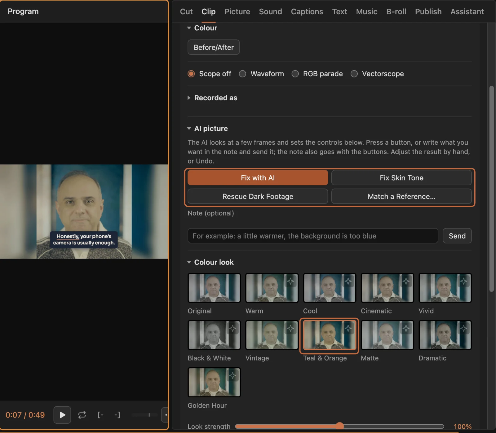
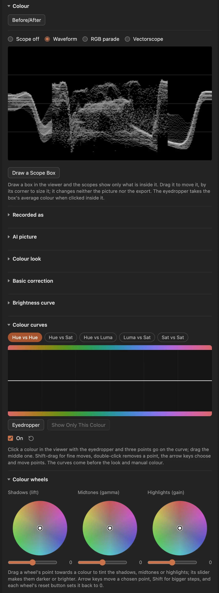

Colour
Colour belongs to each clip and each piece of the recording. Select one and open Clip › Colour: the AI can set it for you, and every control is there by hand.

AI picture
The AI looks at a few frames and sets the controls below. Press one:
- Fix with AI: exposure, white balance and skin, naturally.
- Fix Skin Tone: only the skin, the rest alone.
- Rescue Dark Footage: brings up the face and the shadows of footage shot in poor light.
- Match a Reference…: close to the look of an image you choose.
Or write what you want in Note (optional), for example “a little warmer, the background is too blue”, and press Send. Adjust the result by hand, or Undo. This uses your AI model.
Match Recordings matches the other cameras' colour to the main recording, so cuts do not jump; on a shot, Match to the Main Recording does the same for one clip.
Looks
Colour look: Original, Warm, Cool, Cinematic, Vivid, Black & White, Vintage, Teal & Orange, Matte, Dramatic, Golden Hour. Look strength sets how much of it you get. A look runs on this computer.
By hand
- Basic correction: white balance, tone (exposure, contrast, highlights) and colour (saturation, vibrance). A double click resets a slider.
- Brightness curve and Colour curves (Hue vs Hue, Hue vs Sat, Hue vs Luma, Luma vs Sat, Sat vs Sat). With the Eyedropper, click a colour in the viewer and three points go on the curve; drag the middle one.
- Colour wheels: Shadows (lift), Midtones (gamma), Highlights (gain). Drag a wheel's point towards a colour; its slider makes them darker or brighter.
- Recorded as: if a camera filmed in log (a flat, grey picture), choose its profile; it is made normal before any other colour.
- Load LUT (.cube): a LUT laid over everything in the export.
- Sharpness, Vignette and Skin: Sharpen, Dark edges, Skin smoothing.

Scopes
Waveform, RGB parade or Vectorscope measure the frame at the playhead. Draw a Scope Box measures only part of the picture, a face for example.
One change for many clips
An adjustment layer colours everything under it. Right-click the timeline for Add Adjustment Layer, place it on a track over the clips, and grade it like a clip. To give clips the same grade instead, use Copy Settings and Paste Settings, or Save Look as Preset….
Compare
Before/After in the viewer shows the picture without your colour work, or both side by side (Program).